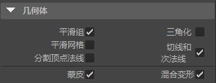

使用“游戏导出器”(Game Exporter)（“文件 > 游戏导出器”(File > Game Exporter)）的“模型”(Model)选项卡可以快速导出静态模型或蒙皮网格。
可以指定是将多个对象导出到单个 FBX 文件，还是将每个对象或层次保存到其自己的 FBX 文件。
- 在“游戏导出器”(Game Exporter)窗口顶部选择“模型默认值”(Model Default)预设。
（有关添加自己的预设的信息，请参见创建“游戏导出器”(Game Exporter)预设。）
- 使用该下拉菜单指明是否要“导出全部”(Export All)或“导出选定”(Export Selected)对象。
如果有想要导出模型的选择集，也可以选择“导出对象集”(Export Object Set)，然后选择集本身。
- 在“几何体”(Geometry)部分，根据需要编辑设置。
例如，您可以使用这些选项来设置是否要在导出的文件中包含混合变形。

- 在“设置”(Settings)部分中，使用复选框指定在导出的文件中是否包含动画，以及是否将对象或层次移动到场景原点 (0, 0, 0)（“移动到原点”(Move To Origin)）。
- 单击“导出”(Export)。
基于您设置的“文件名”(Filename)和“路径”(Path)位置，此操作将导出模型。
提示： 如果已安装 FBX Review，请启用“在 FBX Review 中查看”(View in FBX Review)以立即查看导出的文件。